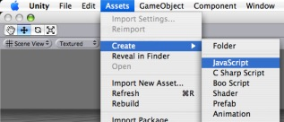
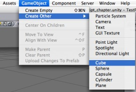
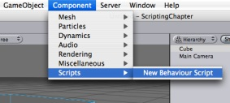
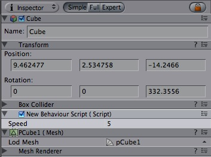

Previous
Previous
Scripting inside Unity is done by writing simple behaviour scripts in JavaScript, C# or Boo. You can even use multiple scripting languages in a single project. This manual assumes you are using JavaScript unless specifically stated otherwise. This is just a short introduction on how to add scripting to your project. For detailed information, see the Script Reference.
Creating new scripts
To create a new script, open the Asset Menu and select Create -> JavaScript, (or C Sharp Script or Boo Script). This will create a new script called NewBehaviourScript and place it in your asset folder.
|  |
You can edit the script by double-clicking on it in the Project View.
An empty behaviour script:
function Update () {
}
This is the default contents of a new JavaScript file. It does not do a lot though, so let's modify it a bit:
function Update () {
print("Hello World");
}
Attaching scripts to objects
Save the above script and create a new object in a scene by opening the GameObject menu and selecting Create Other -> Cube. This should result in a new Cube object appearing in the scene.
|  |
Now attach the script to the cube object either by dragging the script from the Project View onto the cube object (in the Scene or Hierarchy Views) or by selecting the cube and then choosing the script from the Scripts submenu inside the Component menu.
|  |
Note that the script is now visible in the cube object's inspector.
 |
Now press play to test your creation. Your console window will now get filled with the familiar greeting. Exit play mode again.
Manipulating the object
The print statement in above example, albeit very handy when debugging your script, is not doing anything to the cube it is attached to. It's just sitting there without any movement. Let's change the script so the cube rotates slowly around its Y axis.
function Update () {
transform.Rotate(0, 5*Time.deltaTime, 0);
}
So what's all this about? The line that has replaced the print statement first fetches the cube object's Transform and then tells it to rotate 0 degrees around its X axis, 5 around the Y axis and 0 around the Z axis every second. We multiply the number of degrees with Time.deltaTime. Remember that the Update function is called on every frame and this variable contains the number of seconds since last time it got called.
To find out which values you can modify, a good starting point is to look on the inspector window of an object. There you'll see a list of components, with each component having a number of properties. As a rule of thumb, you can modify these properties using the Component.property syntax. So if you add a Rigid Body to the cube (making it a physical object), you can change the mass of the cube on the fly from scripting by assigning a value to RigidBody.mass.
Adding Variables
When playing around with the above script, you might want to adjust the speed of rotation. This can be done by modifying the script directly, but requires Unity to recompile it every time. Also if you attach the script to multiple objects they will all rotate in the same way.
To get around this, you can add variables to your script.
var speed = 5.0;
function Update () {
transform.Rotate(0, speed*Time.deltaTime, 0);
}
Note that after recompiling, the speed variable shows up in the cube object's inspector.
|  |
Hit play and try modifying the value inside the inspector. The speed will change instantly.
Where to go from here
This was just a short introduction on how to use scripts inside the Editor. For more examples, check out the Script Tutorial project that comes with Unity. You could also read through Scripting Overview inside the Script Reference, which contains a more thorough introduction into scripting with Unity plus pointers into the reference itself for in-depth information. Also take a look at the Unity Forums.